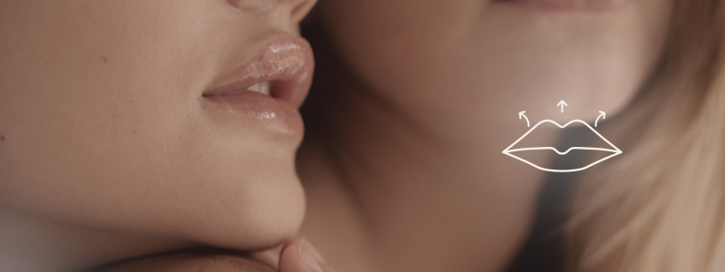

O que é?
É um procedimento cirúrgico que visa encurtar a distância entre o
nariz e o lábio superior, resultando em lábios mais volumosos e definidos.
É uma alternativa aos preenchimentos labiais, pois realça a aparência dos lábios,
tornando-os mais atraentes e joviais sem a necessidade de preenchimentos ou implantes para aumentar o volume.
Para quem é indicado?
➡️ Pessoas com lábios finos ou com excesso de espaço entre o nariz e o lábio superior.
➡️ Indivíduos que desejam um lábio mais definido e com maior exposição dos dentes superiores ao sorrir.
➡️ Aqueles que buscam uma alternativa aos preenchimentos labiais ou querem resultados mais permanentes.
➡️ Pessoas que desejam melhorar a estética facial, especialmente em relação à harmonia entre os lábios e o rosto.
➡️ Indivíduos que não apresentam contraindicações médicas para o procedimento, como problemas de coagulação sanguínea ou infecções ativas na região labial.
É importante ressaltar que a avaliação deve ser feita por um profissional qualificado,
que irá analisar as características faciais e discutir as expectativas do paciente antes de indicar o procedimento.
Como funciona?
O procedimento é realizado com anestesia local, com ou sem sedação.
Envolve a remoção de uma pequena faixa de pele sob o nariz e sutura as bordas, elevando o lábio superior, o que resulta no encurtamento da distância entre o nariz e o lábio.
➡️ A incisão é feita na parte interna do lábio, o que minimiza cicatrizes visíveis.
➡️ A pele é cuidadosamente removida, e a incisão é fechada com pontos absorvíveis, que não precisam ser removidos posteriormente.
➡️ A cicatriz resultante geralmente é discreta e fica localizada na base do nariz,
tornando-se menos visível com o tempo.
➡️ Após a remoção da pele, os pontos são dados para unir as bordas da incisão, resultando em um lábio mais volumoso e definido.
➡️ O procedimento geralmente leva cerca de 30 minutos a 1 hora e é realizado em ambiente ambulatorial, permitindo que o paciente retorne para casa no mesmo dia.
Quais são os tipos de lifting labial?
Os tipos de lifting labial incluem:
Lifting labial subnasal
É a cirurgia de lifting labiam mais comum. O médico faz uma única incisão em formato de
chifre de boi abaixo do seu nariz. Em seguida, ele levanta o centro e as laterais do seu lábio superior.
➡️ É indicado para pessoas com lábios finos ou que desejam um lábio mais volumoso e definido.
Lifting labial central
O médico faz uma incisão na base do nariz para levantar o centro do lábio superior (arco do cupido).
➡️ É indicado para pessoas que desejam um lábio mais volumoso e definido, especialmente no centro.
Lifting labial lateral
Este tipo eleva os cantos da boca em um leve sorriso.
➡️ É ideal para pessoas com lábios caídos ou curvados para baixo.
Lifting labial direto
O médico faz uma incisão ao longo da borda do lábio superior no formato de uma gaivota voando. Isso cria um lábio superior mais definido.
Lifting labial italiano
Este lifting é mais sutil que o lifting subnasal e envolve duas incisões em cada narina. No entanto, não levanta o centro do lábio.
Elevação labial de V para Y (avanço VY)
Este procedimento envolve a remoção de uma pequena faixa de pele em forma de V na base do nariz, seguida pela sutura em forma de Y para elevar o lábio superior.
Preparação para um lifting labial
Seu médico lhe dará instruções especiais sobre como se preparar para o procedimento:
➡️ É crucial parar de consumir bebidas alcoólicas;
➡️ Evite fumar por pelo menos 2 semanas antes do procedimento, pois o tabagismo pode afetar a cicatrização e aumentar o risco de complicações.
➡️ Informe ao médico sobre todos os medicamentos que você está tomando, incluindo medicamentos prescritos, medicamentos de venda livre e suplementos.
➡️ O médico pode recomendar a interrupção de certos medicamentos, como anticoagulantes, anti-inflamatórios não esteroides (AINEs) e suplementos de ervas, que podem aumentar o risco de sangramento durante o procedimento.
➡️ É importante informar ao médico sobre qualquer condição médica pré-existente, como diabetes, hipertensão ou problemas de coagulação sanguínea, pois isso pode afetar o procedimento e a recuperação.
➡️ O médico pode solicitar exames laboratoriais ou de imagem para avaliar sua saúde geral e garantir que você esteja apto para o procedimento.
➡️ É recomendado que você evite a exposição solar intensa e o uso de produtos químicos agressivos na área labial por pelo menos uma semana antes do procedimento, para minimizar o risco de irritação ou complicações.
Recuperação
A recuperação do lifting labial costuma ser rápida.
➡️ É comum sentir inchaço, dor e rigidez após a cirurgia.
➡️ É recomendado repouso e cuidados com a área para garantir uma boa cicatrização.
➡️ Durma de costas com a cabeça elevada.
➡️ Evite falar muito.
➡️ Evite beber álcool ou fumar produtos de tabaco enquanto estiver se recuperando.
➡️ Coma alimentos macios que não exijam muita mastigação.
➡️ A exposição solar deve ser evitada nos primeiros meses para prevenir o escurecimento da cicatriz.
➡️ A maioria dos pacientes retoma suas atividades normais em poucos dias, mas é aconselhável evitar exercícios físicos intensos por pelo menos uma semana.
➡️ O resultado final do procedimento pode levar algumas semanas para ser totalmente visível,
à medida que o inchaço diminui e a cicatrização completa ocorre.
➡️ É importante seguir as orientações do médico para garantir uma recuperação adequada e minimizar o risco de complicações.
➡️ O médico pode recomendar o uso de pomadas cicatrizantes ou cremes específicos para ajudar na cicatrização e minimizar a aparência da cicatriz.
➡️ Seu médico agendará uma consulta para remover os pontos alguns dias após o procedimento, ou os pontos se dissolverão sozinhos.
É fundamental comparecer às consultas de acompanhamento para monitorar a cicatrização e avaliar o resultado final do procedimento.
Quando chamar o médico?
Ligue para seu médico se você apresentar:
➡️ Uma reação alérgica ou infecção.
➡️ Sangramento excessivo.
➡️ Inchaço que piora ou não desaparece.
➡️ Febre alta.
➡️ Dor intensa que não melhora com medicamentos prescritos.
➡️ Vermelhidão ou secreção incomum na área da incisão.
➡️ Alterações na sensibilidade dos lábios ou ao redor da boca.
➡️ Dificuldade para falar, comer ou beber após o procedimento.
➡️ Qualquer outra preocupação relacionada à cicatrização ou ao resultado do lifting labial.
É importante entrar em contato com o médico imediatamente se você tiver qualquer um desses sintomas, pois eles podem indicar complicações que precisam ser tratadas prontamente.
Benefícios
➡️ Rejuvenescimento facial: Cria uma aparência mais jovem e atraente;
➡️ Resultados duradouros: Oferece uma solução permanente para lábios finos ou alongados;
➡️ Realça o sorriso: Aumenta a exposição dos dentes superiores ao sorrir, tornando o sorriso mais atraente.
➡️ Minimamente invasivo: Procedimento cirúrgico com cicatrizes discretas e recuperação rápida;
➡️ Melhora a autoestima: Proporciona uma aparência mais confiante e atraente, aumentando a autoestima do paciente;
➡️ Procedimento seguro: Realizado por profissionais qualificados, com baixo risco de complicações quando as orientações são seguidas corretamente;
➡️ Recuperação rápida: A maioria dos pacientes retoma suas atividades normais em poucos dias, com inchaço e hematomas mínimos;
➡️ Melhora a definição dos lábios: O lifting labial proporciona lábios mais volumosos e definidos, melhorando a estética facial;
➡️ Resultados naturais: O procedimento é projetado para criar resultados naturais e harmoniosos, sem exageros ou artificialidade;
➡️ Melhora a simetria: O lifting labial pode corrigir assimetrias nos lábios, proporcionando um sorriso mais equilibrado e harmonioso;
➡️ Não requer internação: O procedimento é realizado em ambiente ambulatorial, permitindo que o paciente retorne para casa no mesmo dia;
➡️ Não afeta a função labial: O lifting labial não interfere na função dos lábios, permitindo que o paciente fale, coma e beba normalmente após a recuperação;
➡️ Procedimento rápido: O lifting labial é um procedimento relativamente rápido, geralmente levando cerca de 30 minutos a 1 hora, dependendo da complexidade do caso;
➡️ Não requer anestesia geral: O procedimento é realizado com anestesia local, o que reduz os riscos associados à anestesia geral e permite uma recuperação mais rápida;
➡️ Melhora linhas de expressão: O lifting labial pode ajudar a suavizar linhas finas e rugas ao redor dos lábios;
➡️ Inverte o canto do lábio curvado para baixo: O lifting labial pode corrigir o canto do lábio, que pode cair com a idade, proporcionando um sorriso mais alegre e positivo.
Cansado(a) de lábios finos ou um sorriso que esconde os dentes?
O Lifting Labial pode ser a solução ideal para um sorriso mais jovem e harmônico.
Agende sua avaliação e descubra a proporção perfeita para o seu rosto!
 Agende seu horário
Agende seu horário